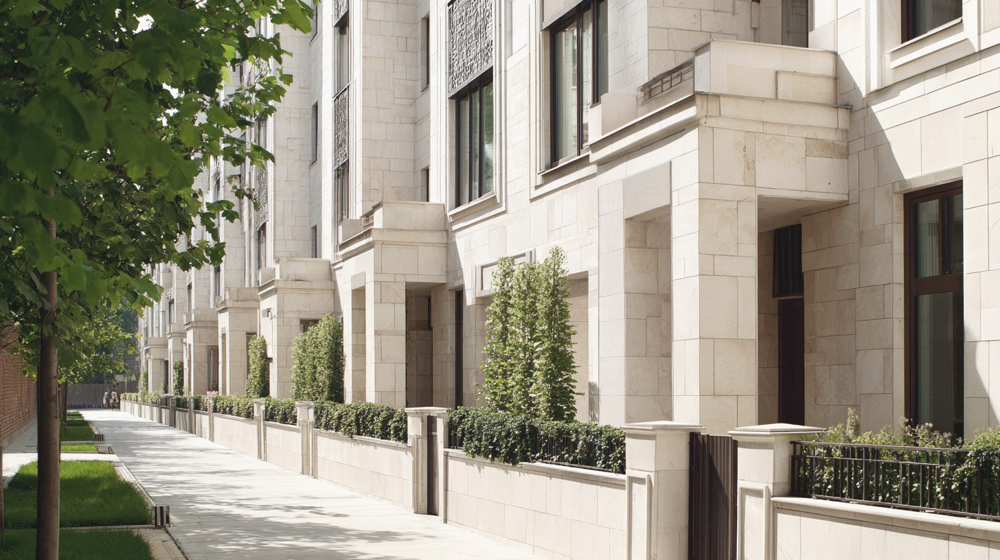
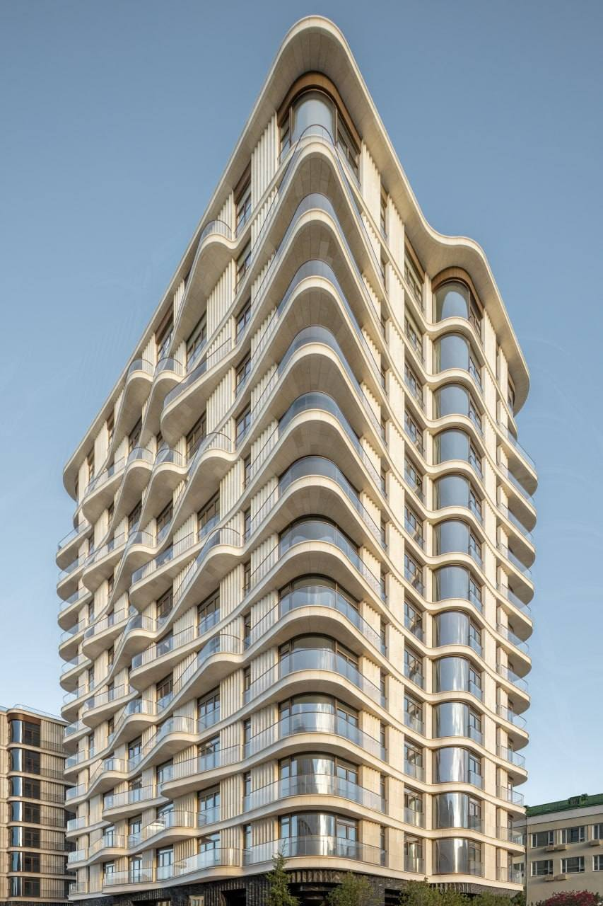
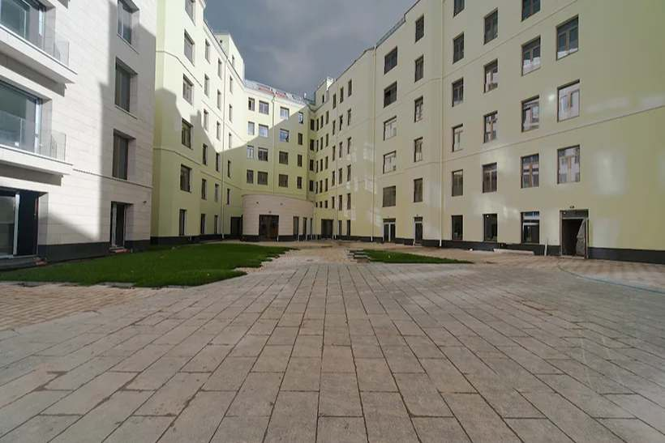

Район · перепроверено 24 сентября 2026
Замоскворечье и Якиманка
На заметку: напротив Кремля не один район, а три — остров между рекой и каналом, старое Замоскворечье и Якиманка. И ещё полоса за Садовым кольцом, которую продают под тем же именем. Между ними метр на вторичке отличается почти вдвое.

Откуда цифры
Один район, четыре калькулятора
| Кто считал | Что считал | Цена метра |
|---|---|---|
| «Инком-Недвижимость», июнь 2026 | всё вторичное жильё района | Замоскворечье — 573 тыс ₽, Якиманка — 821 тыс ₽ |
| bnMAP.pro, июль 2026 | все новостройки района | Замоскворечье — 1,8 млн ₽, Якиманка — 3,09 млн ₽ |
| «Метриум», II квартал 2026 | новостройки верхнего сегмента | Замоскворечье — 2,17 млн ₽ |
| NOTA, ЦИАН 24 сентября 2026 | 33 клубных дома: вторичка и лоты застройщиков | вторичка — 1,44 млн ₽, у застройщиков — 2,29 млн ₽ |
Внутри одного Замоскворечья оценки расходятся почти в четыре раза — от 573 тысяч до 2,17 миллиона. Обе цифры верные: одна про весь жилой фонд, другая — про новые дома верхнего сегмента. Поэтому цифру мы всегда даём вместе с тем, кто и что считал.
Красная линия
Семь вещей, на которые здесь стоит смотреть
| Что | Как здесь |
|---|---|
| Место | Три части и полоса за Садовым. Медиана вторички: у Третьяковки и в Кадашах — 2,40 млн, на Ордынке — 1,67, в Татарской слободе — 1,40, на Якиманке — 1,26. |
| Вид | Кремль из окна — не гарантия цены. Софийский на первой линии набережной стоит 1,50 млн за метр и продаётся в среднем 470 дней. |
| Дом | Три поколения: доходные дома и фабрики XIX века, клубные дома 2000-х, новые кварталы с ключами до 2029 года. |
| Выезд | С острова — только через мосты, и они стоят. Ближе к Ордынке и Садовому кольцу уезжать заметно легче. Проверять маршрут в час пик. |
| Паркинг | В части клубных домов машиномест меньше, чем квартир: в DUO 44 на 49, в CULT — 17 на 80. Квартиру без места потом тяжело продать. |
| Витрина | Больше трети объявлений в клубных домах висят дольше полугода. Медиана — 114 дней. |
| Сценарий | Для тех, кто живёт пешком: музеи, Музеон, набережные, переулки с храмами. Для сценария «быстро уехать на машине» это не тот адрес. |

Дом месяца
Полянка/44
Восемь корпусов на Большой Полянке, три из них — исторические здания Густава Гельриха. 189 квартир, потолки 3,5 метра и 372 машиноместа — почти два на квартиру. На вторичке 33 лота, у застройщика ещё три, с медианой 1,46 млн. В одном и том же квартале собственник просит на шестую часть меньше, чем застройщик.
Больших закрытых дворов внутри Садового кольца больше не будет: свободной земли под них нет. Поэтому такие кварталы — не аналог новостройки, а отдельный продукт.

Без отметки
Три места, где район не проходит собственную линию
Софийская набережная
Вид на Кремль есть, а цена ниже соседей и витрина долгая: Софийский — 470 дней, Balchug Viewpoint — 387. Адрес набережной сам по себе квартиру не продаёт.
«Замоскворечье» за Садовым
Voxhall, Sky House, Монблан, Павелецкая от Гранель — это Павелецкая и Шаболовка, другой класс: от 650 тысяч до 1,3 млн за метр. Название района здесь — часть рекламы.
Долгая витрина застройщиков
Русские сезоны — медиана 637 дней в продаже, Золотой — 554, A.Residence — 295. В готовом доме цену у застройщика стоит сравнивать с вторичкой, а не со стартом продаж.
Чего мы не нашли
Цен сделок по району не публикует никто — только цены предложения. Медианы по кварталам мы посчитали сами по объявлениям ЦИАН. У нескольких клубных домов на витрине одно объявление или ни одного лота застройщика — там цену приходится спрашивать.
Источники: «Инком-Недвижимость» (МирКвартир, АЛЛЕ, июнь 2026), bnMAP.pro (РБК Недвижимость, июль 2026), «Метриум» (РБК Недвижимость и МирКвартир, июль 2026), ЦИАН — выгрузка NOTA 24 сентября 2026, Элитное.ру — характеристики домов.